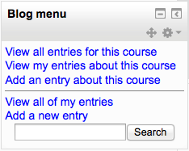
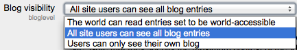
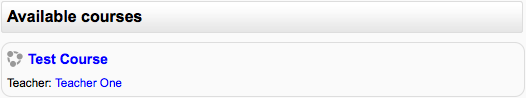
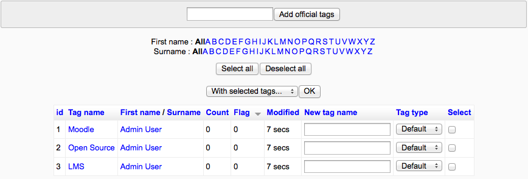

There are many ways to customise the appearance of your Moodle site so that it blends in with, for example, your college site or your company’s corporate brand. Below links provide more information on personalising the appearance of Moodle:
A theme sets the appearance - colours, fonts, and icons for your Moodle site.
Both the daily detail screen and the monthly detail screen have the Preferences button in the upper right. Here you can set the time format, first day of the week, number of events to show in the calendar block, days to look forward for events and if the filters on this calendar should be saved as the default for all calendars.
The following settings can be changed by a Site administrator in Administration > Appearance > Calendar :
- Admins see all - Whether admins see all calendar events or just those that apply to themselves.
- Time display format - Whether a 12 or 24 hour format is used. This setting can be overridden by user preferences.
- Start of week - Default is Sunday.
- Weekend days - Weekend days are shown in a different colour.
- Days and events to look ahead - For determining how many events are listed in the Upcoming Events block. If the Upcoming Events block becomes too long you can reduce the number of days and events to lookahead.
- Calendar export days to look ahead and back - A custom range of dates, such as a school term or year, may be set as a calendar export option.
- Calendar export salt - The calendar export salt is a random string of characters used for improving of security of authentication tokens used for exporting of calendars.
Blogs in Moodle are enabled by default. They may be disabled by a site administrator in Settings > Site administration > Advanced features by setting the blog visibility to ‘Disable blog system completely’.
Blog entries per page - In Settings > My profile > Blogs > Preferences you can set how many blog entries are displayed on a page. The default number of entries is 10.
Blogs have additional settings which may be changed by an administrator in Settings > Site administration > Appearance > Blog.
Enable blog associations - If blog associations are enabled, users can blog about their course or a particular activity using the context-sensitive links for adding an entry in the Blog menu block e.g. ‘Add an entry about this assignment’ or ‘Add an entry about this course’.
Blog visibility - This setting allows you to restrict the level to which user blogs can be viewed on this site. Note that they specify the maximum context of the VIEWER not the poster or the types of blog posts. Blogs can also be disabled completely if you don’t want them at all.
Note: Sites upgrading to 2.0 which previously had blog visibility set to “Users can only see blogs for people who share a course” or “Users can only see blogs for people who share a group” will have blogs converted into blog-like format forums.
Enable external blogs - Enables users to specify external blog feeds. Moodle regularly checks these blog feeds and copies new entries to the local blog of that user.
External blog cron schedule - How often Moodle checks the external blogs for new entries. By default it is 24 hours.
Maximum number of external blogs per user - By default, the number of external blogs each user is allowed to link to their Moodle blog is 1.
Enable comments - Blog comments are enabled by default, though may be disabled if required.
The list of images that will be used to replace the emoticon text can be defined by a site administrator in Settings > Site administration > Appearence > HTML settings. The images defined here are used by Display emoticons as images filter and TinyMCE HTML editor’s Insert emoticon popup menu.
An administrator can enable selected media players in Settings > Site administration > Appearence > Media embedding
See more details Media Embedding
Moodle Docs is an abbreviation for Moodle documentation.
By default, managers, teachers and non-editing teachers (and any other users with the capability moodle/site:doclinks) have “Moodle Docs for this page” links at the bottom of each page in Moodle for accessing context-specific documentation.
An administrator can change Moodle Docs settings in Settings > Site administration > Appearance > Moodle Docs.
The default path is to docs.moodle.org. If a user has selected a language for which there is documentation available, the “Moodle Docs for this page” links will link to the documentation in that language.
If the Moodle Docs document root field is left blank, no “Moodle Docs for this page” links will appear.
You may find that teachers prefer the documentation to open in a new window, so they can easily return to their page in Moodle. If so, click the “Open in new window” checkbox.
An administrator or manager (or other user with the capability moodle/my:configsyspages) can set which content (course overview, calendar, blocks) appears on the My home page for new users as follows:
- Access Settings > Site administration > Appearance > Default My Moodle page .
- Select the required blocks from the “Add a block” drop-down menu. Configure each block as desired
- Reposition blocks using the arrow icons in the block headers
An administrator or manager (or any other user with the capability moodle/user:managesyspages) can set which blocks appear on the default profile page for new users.
- Access Administration > Site administration > Appearance > Default profile page.
- Select the required blocks from the “Add a block” drop-down menu. Configure each block as desired.
- Reposition blocks using the arrow icons in the block headers.
An administrator can change the following course settings in Settings > Site administration > Appearance > Courses.
Course contacts - Users with the selected role(s) e.g. teachers are listed in the course description. By default, users with the role of teacher in a course are listed in the course description for that course. If a course has several teachers, the course description can become rather long. In this case, you can create a role e.g. head of subject with no capabilities set and assign it to selected users in addition to their teacher role. If you then select only the head of subject role in the course managers setting, the course description will be shorter.
Display extended corse names - By default, only course full names are displayed in the list of courses. If you check this box, then the course short name will also be displayed.
Course per page - You can define value for the number of courses to be displayed per page in a course listing.
Courses with summaries limit - maximum number of courses to display in a course listing including summaries before falling back to a simpler listing.
Course summary files limit - The maximum number of files that can be attached to a course summary.
Course summary files extensions - A comma-separated list of allowed course summary files extensions.
Admins can choose to disable AJAX across the whole site in Settings > Site administration > Appearance > AJAX and Javascript.
Ajax is required for drag and drop functionality so leaving it enabled is recommended.
Tags can be managed by a site administrator or manager (or any other user with the capability moodle/tag:manage) in Settings > Site administration > Appearance > Manage tags.
The manage tags page provides a list of tags, together with information on their creators, how many times they are used, when they were last modified and which tags have been flagged as inappropriate. Inappropriate tags are shown in red when using the default theme.
Please see Tags to know more about tags.
An administrator can add additional HTML to every page in Settings > Site administration > Appearance > Additional HTML.
These settings allow you to specify HTML that you want added to every page without altering the Moodle code files.
You can add HTML will be added within the HEAD tag for the page, immediately after the BODY tag has been opened, or immediately before the body tag is closed.
Doing this allows you add custom headers or footers on every page, or add support for services like Google Analytics very easily and independent of your chosen theme.